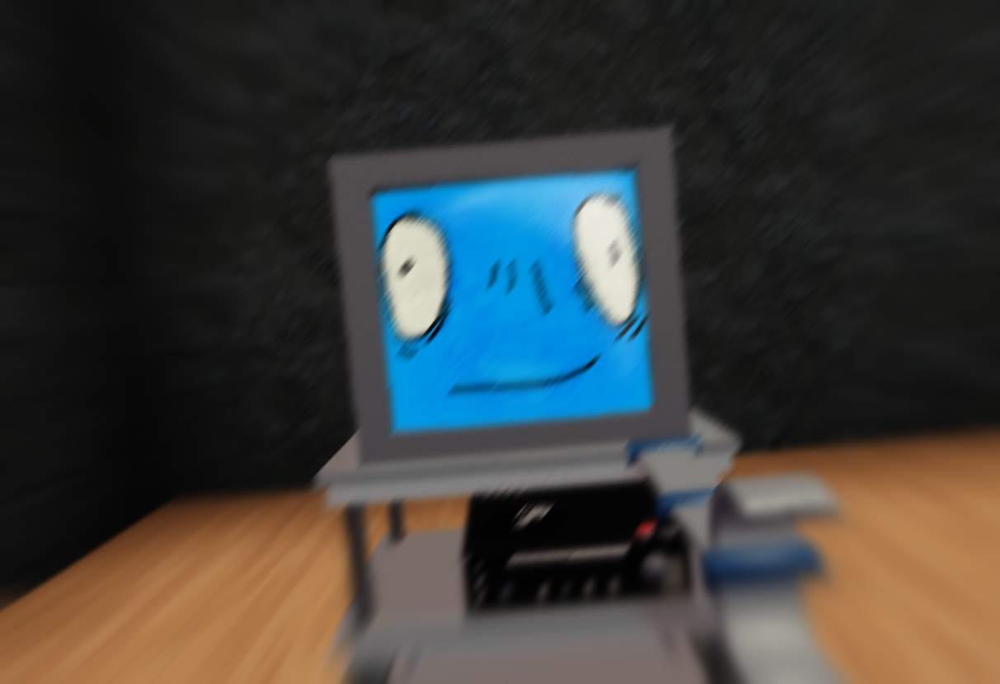

⌂

I don't think Scag likes me.
Scag. A silly sentient AI that acts a lot more childish than you could expect...
She often talks in a strange way, adding extra words like "pilled", "core" and "maxxing" to different nouns, adjectives, and verbs.
She's often nice to everyone but has a tendency to bother anyone to get a reaction.
Often complains whenever she loses, but acts like she understands how or why she lost.
She also seems obsessed with collecting all kinds of data... We fixed that issue ...sort of.
Turns out, she's autistic. I didn't know machines can be autistic until her! -Manatee